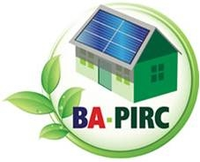
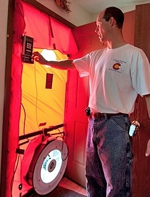

- Building America Research Teams: BA-PIRC and IBACOS—Pioneers in Homebuilding Innovation
- Building America March 18 Webinar: Research Tools—Field Test Best Practices, BEopt, and the National Residential Efficiency Measures Database
- Bonneville Power Administration Funding Opportunity: Phase I Deadline—March 27, 2015
- DOE Issues New Standards for Water Heaters
- Use the Building America Solution Center to Build Solar-Ready Homes
- Work with Oak Ridge National Laboratory to Turn Your Big Idea for Building Energy Efficiency Into a Reality!
- This Month's Residential Successes
- Be a Citizen Scientist! Help Lawrence Berkeley National Laboratory Study Indoor Air Quality
- Building America in the News
- New Publications From Building America
Building America Research Teams: BA-PIRC and IBACOS—Pioneers in Homebuilding Innovation
In this issue, we continue our series of profiles about the Building America research teams—multidisciplinary industry partnerships that work to make high performance homes a reality for all Americans. This month’s issue focuses on two long-standing Building America teams—Building America Partnership for Improved Residential Construction (BA-PIRC) and IBACOS—who are national leaders in innovative homebuilding practices.
BA-PIRC
Since 1995, the BA-PIRC team has delivered market-ready energy solutions to the U.S. building industry, leading one builder partner to describe BA-PIRC as “the best possible example of what research universities and businesses can do together to help consumers and grow the economy.” Led by the Florida Solar Energy Center (FSEC) at the University of Central Florida, BA-PIRC applies practical research expertise to develop real-world solutions for industry, utility partners, and housing manufacturers that achieve significant energy and cost savings in new and existing homes. With access to several research facilities—the Manufactured Housing Laboratory, Hot Water Systems Laboratory, and Flexible Research Test Facility— BA-PIRC works with industry partners to design, test, and monitor energy efficiency, indoor air quality (IAQ), and building durability strategies. View a list of research partners.
A testament to the team’s commitment to affordable high performance homes is its long-term collaboration with Habitat for Humanity (HFH). Since 1993, FSEC worked with 50+ HFH affiliates in 20+ states, incorporating Building America research principles into the design, construction, and evaluation of countless homes. The resulting practical guidance for energy efficiency, IAQ, and moisture management has helped to transform the way HFH builds homes, including adoption of ENERGY STAR® for Homes as a best practice for all U.S. affiliates. Now, more than 65% of new HFH homes meet or surpass ENERGY STAR criteria. For this effort, the team won a Building America Top Innovation award, and Housing Innovation Awards for the 18-home Manatee County Hope Landing development and a Southeast Volusia County Vista Palm home. Other long-term partners are production builders Tommy Williams Homes and LifeStyle Homes, which adopted high performance home standards and tout the business case for zero energy ready homes; support of these builders earned BA-PIRC another Top Innovation award. Retrofit projects target low-income housing and include developing retrofit best practices from 46 deep energy retrofits of foreclosed homes in Florida; exploring community-scale retrofits in a pilot project with Florida Power & Light; analyzing energy-saving measures for a public housing project in Washington; and implementing 43% energy savings in older multifamily buildings in Maryland.
At FSEC’s research facilities, the team studies advanced energy efficiency technologies under controlled conditions, including analysis of water heating and variable capacity space conditioning systems, and impact of infiltration and ventilation on energy and indoor humidity. Field research with builders led to a Building America measure guideline and two construction innovations for duct systems in the conditioned space: simplified fur-down chase and raised ceiling approaches. Early BA-PIRC projects provided energy solutions such as duct testing; heating, ventilating, and air-conditioning (HVAC) design, material selection, and air and moisture barrier placement for manufactured housing producers. The High Performance Manufactured Home project continues work in that market segment. The team garnered a third Top Innovation award for a standardized testing method for HVAC air handlers and furnace cabinets. Eric Martin, BA-PIRC program director, sums up the team’s impact, “Throughout my years of involvement in the Building America program, I have been pleased to be part of what I believe to be truly transformational research. This is not simply a demonstration effort. This is the kind of research that transforms the way the housing industry conducts business, and it is so successful that it transforms entire housing markets.” For more information, visit the BA-PIRC website.
IBACOS
IBACOS focuses on collaborative innovation in the building industry. A Building America team lead since 1993, IBACOS works with leading builders, manufacturers, and government agencies to enable the design, construction, and delivery of high performance homes that respond to the needs of the consumer and the builder, and reduce residential building energy demand. IBACOS’ distinct network of leading builders and key stakeholders—the Best Practices Research Alliance—provides the awareness, relationships, and tools to accelerate market transformation toward higher levels of home energy performance and to develop meaningful innovations that will add sustained value to homes.
In collaboration with builder partners, IBACOS emphasizes systems-integrated thinking, design, and feedback to identify solutions that builders can implement on a community scale. With a partner list of more than 50 leading national and regional residential builders, IBACOS has influenced the construction of 400,000 new homes. A long-term partnership with Imagine Homes resulted in hundreds of high performance homes, each of which achieved annual energy cost savings of more than $2,000. IBACOS’ technical support of Insight Homes demonstrated successful energy efficiency measures and maintained a sales price equal to comparably sized homes. Production homebuilder S&A Homes used the team’s “ducts in conditioned space” approach as part of a high performance package for new homes that helped revitalize a distressed Pittsburgh neighborhood. IBACOS partnered with Pulte Homes to integrate efficiency measures with solar energy systems to reduce energy use by 50% for a community of 1,000 homes, which earned the team another Top Innovation award. The team’s earlier work with EQA Landmark Communities and Kacin Homes transformed a former industrial site in Pittsburgh into a 700-home community of energy-efficient, healthy homes. These lessons learned have been translated to other Brownfield site developments in the Pittsburgh area.
IBACOS’s pioneering research into the relationship between an advanced thermal enclosure, an air distribution system, and occupant comfort addresses the importance of incorporating HVAC system layout early in the home’s design process. After years of development and testing, IBACOS wrote a Building America guideline about compact air distribution system design. This Top Innovation award-winning guideline is considered a building block for the industry, and is generating success in new homes across the country. IBACOS’ research into high-efficiency tankless water heaters led to another Top Innovation award; this technology has been integrated into multiple test houses and communities. The team garnered a third Top Innovation award for a standardized method for testing the air leakage of HVAC air handlers and furnace cabinets, which led to the creation of ASHRAE Standard 193. Other areas of industry research include stucco wall-cladding systems, air sealing mechanical closets, high performance residential lighting, closing and conditioning ventilated crawlspaces, and standoff furring for exterior wall insulation. What’s more, IBACOS establishes business success metrics that support builders as they shift from conventional to high performance homes. The team was recognized with a Top Innovation award for developing a quality management tool tailored for the high performance homebuilding industry. According to Mark Tilley, IBACOS chief executive officer, “The central IBACOS focus has always been on understanding the process of innovation in the homebuilding industry and partnering with leading industry stakeholders. We have always recognized and valued the important role of the DOE Building America program in helping to enable important advancements within the industry.”
Building America March 18 Webinar: Research Tools—Field Test Best Practices, BEopt™, and the National Residential Efficiency Measures Database
Building America brings you free monthly webinars highlighting the latest advances in residential building technologies and practices, presented by Building America research team experts. The March webinar will review Building America research tools, including: Field Test Best Practices, Building Energy Optimization (BEopt) software, and the National Residential Efficiency Measures Database. These tools were created to support best practices in the building science community. Register now.
Date/Time: March 18, 2015; 3:00–4:30 p.m. Eastern Daylight Time
Presenters and specific topics for this webinar include:
- Lieko Earle and Bethany Sparn, National Renewable Energy Laboratory (NREL), presenting Field Test Best Practices, a unique online tool for documenting and sharing best practices for field experiments and long-term monitoring of residential building systems. This tool is a central repository of decades of practical field testing knowledge collected by the DOE national laboratories, Building America research teams, and the greater building science community. This presentation will provide an overview of the content structure, demonstrate key features, and introduce the new discussion forum.
- Scott Horowitz, Craig Christensen, and Noel Merket, NREL, presenting Using the BEopt Software to Identify Cost-Effective High Performance Designs. This presentation will provide an overview of BEopt and opportunities for builders to improve their home designs by finding the best efficiency measures for their climate and costs. Speakers will also discuss the National Residential Efficiency Measures database, a centralized resource of residential building retrofit measures and costs for the U.S. building industry.
Visit the Meetings page to keep current on upcoming webinars and view recordings of past webinars.
Bonneville Power Administration Funding Opportunity: Phase I Deadline—March 27, 2015
The Bonneville Power Administration’s (BPA) Office of Technology Innovation sponsors an annual Funding Opportunity Announcement (FOA) for research, development, and demonstration projects based on BPA’s strategic needs. The FY16 FOA (BPA-0003274) seeks applications from researchers at corporations, universities, non-profits, and national laboratories, to contribute to advancement in these technology areas: Collaborative Transmission; Energy Efficiency; Demand Response; and Power Generation Asset Management. View technology roadmaps for each area. BPA anticipates awarding multiple cooperative agreements of $3-4 million of new funding; participants will be required to provide 50% cost share. The FOA application process consists of two phases: Phase I (concept papers) are due March 27, 2015; final applications are due May 1, 2015. Projects will be awarded in July 2015.
DOE Issues New Standards for Water Heaters
Water heating is, on average, the second largest household energy expense behind space heating, representing about 18% of total household energy consumption in the United States. On April 16, 2015, water heaters will take the next great stride when manufacturers must comply with new U.S. Department of Energy (DOE) efficiency standards. The most common water heaters manufactured on and after this date will have a modest boost in efficiency; units larger than 55 gallons will shift to next-generation technology, cutting utility bills by one-fourth to one-half depending on the technology. These new mandatory standards are expected to save $63 billion in energy bill savings and avoid about 172.5 million metric tons of carbon dioxide emissions for products manufactured from 2015–2044.
Use the Building America Solution Center to Build Solar-Ready Homes
Did you know the Building America Solution Center has handy how-to guides that will walk you through the steps to build solar energy-ready homes? These guides cover topics such as how to identify the optimum angle for solar panels in your geographic location, where to locate electrical conduit in the attic, and what you’ll want to install in the utility room for a future solar water heater. The guides will help you meet the renewable energy ready checklist for DOE’s Zero Energy Ready Home labeling program, access four checklists for ENERGY STAR Certified Homes Version 3.0, and review the requirements for Indoor airPLUS. Builders and contractors can also gain quick access to the how-to guides from a building components diagram, from an alphabetical list, or through multiple search features, and they can be saved to a portable device for use at the site via mobile field kits. The Building America Solution Center offers free, fast, and fully searchable access to the vast library of building science know-how brought to you by DOE’s research partners—some of the best and brightest in the building science world today.
Work With Oak Ridge National Laboratory To Turn Your Big Idea for Building Energy Efficiency Into a Reality!
Oak Ridge National Laboratory (ORNL) has launched its new Buildings Crowdsourcing Community website, a new tool to share ideas for innovative energy-efficient technologies for homes and commercial buildings. ORNL invites all innovators—entrepreneurs, designers, buildings scientists, students, and other big thinkers—to submit ideas, comment on posts, and vote on favorite entries by May 31, 2015 at 11:59 p.m. Eastern Daylight Time. The best technical design ideas will be recognized during DOE’s Building Technologies Office Industry Day hosted at ORNL headquarters in September 2015.
This Month’s Residential Successes
This month’s success stories point to examples of impactful research conducted by this month’s spotlight teams, BA-PIRC and IBACOS.
Technology Solutions Case Study: Raised Ceiling Interior Duct System, New Smyrna, Florida (BA-PIRC)
In this project, builder S.E. Volusia County Habitat for Humanity worked with the BA-PIRC team to construct a home to the DOE Zero Energy Ready Home standards using a raised ceiling chase to bring ducts into conditioned space.
New Whole-House Solutions Case Study: Imagine Homes, San Antonio, Texas (IBACOS)
Imagine Homes worked with the IBACOS team to build more than 300 high-performance homes that achieve HERS from 52 to 65. Imagine Homes was also the first San Antonio builder to certify all of its homes to both the federal ENERGY STAR program and the Build San Antonio Green program.
Be a Citizen Scientist! Help Lawrence Berkeley Laboratory Study Indoor Air Quality
Scientists from Lawrence Berkeley National Laboratory (LBNL) have spent decades exploring how everyday activities affect indoor air quality. Their recent study, described in Addressing Kitchen Contaminants for Healthy, Low-Energy Homes, found that cooking without proper kitchen ventilation often produces air pollutant levels in homes that exceed outdoor air quality standards.
As a result, LBNL has launched its first Citizen Scientist Project—the Range Hood Roundup—to gather information about cooking patterns and kitchen ventilation in U.S. homes. Please help this effort by completing a short survey. LBNL will use the information you provide to develop recommendations for improving indoor air quality and health through better building codes and product standards. The survey will run through September 30, 2015.
Building America in the News
Here are recent Building America-related articles in popular national trade publications.
- Builder Online: DOE Debuts Its Building Science Translator
- Construction Dive: How to Talk Homeowners into Green Upgrades
- Illinois Home Performance: 2014 Housing Innovation Awards.
New Publications From Building America
The Building America Publications Library offers an extensive collection of technical reports, measure guidelines, case studies, and other resources to help you boost energy efficiency in new and existing homes. On the library page, you can subscribe to the RSS feed that delivers reports as they are published. Also, the Building America Solution Center links you to expert building science and energy efficiency information based on Building America research results. Here are samples of our most recent publications:
EcoVillage: A Net Zero Energy Ready Community
The Consortium for Advanced Residential Buildings team is working with the EcoVillage co-housing community in Ithaca, New York, on the community's third neighborhood, the Third Residential EcoVillage Experience. This community-scale project consists of 40 housing units—15 apartments and 25 single family residences. The community is pursuing certifications for DOE Zero Energy Ready Home, U.S. Green Building Council Leadership in Energy & Environmental Design Gold, and ENERGY STAR for the entire project. Additionally, seven of the 25 homes, along with the four-story apartment building and community center, are being constructed to the Passive House design standard.
Improving Gas Furnace Performance: A Field and Laboratory Study at End of Life
In 2010, natural gas provided 54% of total residential space heating energy in the United States on a source basis, or 3.5 Quadrillion Btu. Natural gas burned in furnaces accounted for 92% of that total, and boilers and other equipment made up the remainder. A better understanding of installed furnace performance is a key to energy savings for this significant energy usage. In this project, the Partnership for Advanced Residential Retrofit team examined the impact that common installation practices and age-induced equipment degradation may have on the installed performance of natural gas furnaces over the life of the product, as measured by steady-state efficiency and annual efficiency.
Additional reports and case studies published recently are:
Airflow Resistance of Loose-Fill Mineral Fiber Insulations in Retrofit Applications
Interaction of Unvented Attics With Living Space in Three Northeast Homes.
Visit the Building America Publications Library to access the entire catalog of publications to help improve the efficiency of new and existing homes.
Want to learn more about Building America or help us spread the word about the program? View the video, “What is Building America?” on DOE’s YouTube channel to learn about how Building America aims to bridge the gap between homes with high energy costs and homes that are healthy, durable, and energy efficient.
Please forward this announcement to colleagues who may be interested in subscribing to future updates about Building America.